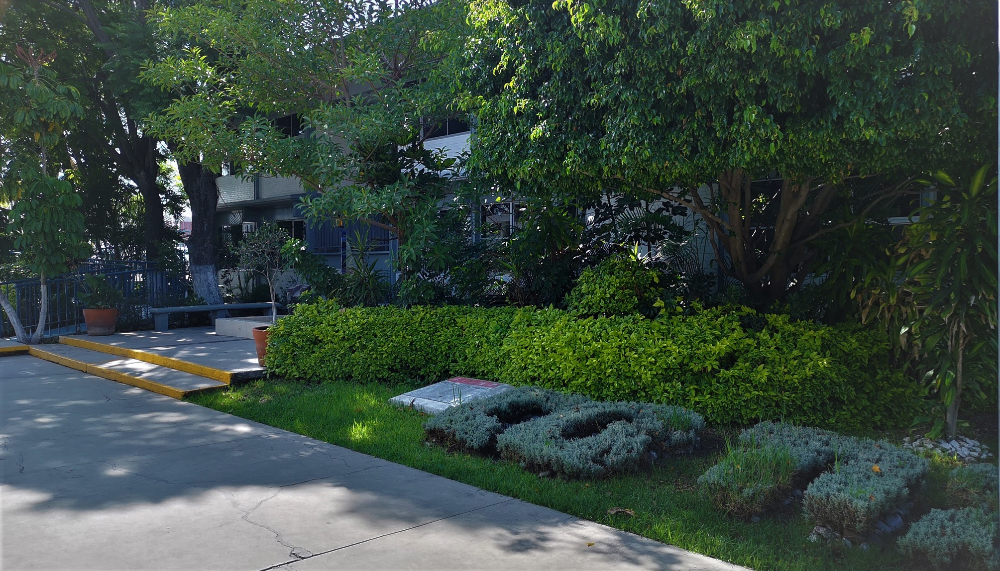

Ay la preparatoria, el CBTIS-145 fue donde curse por 3 años el bachillerato. Aquí fue cuando comencé a aplicar todo lo que había aprendido en mis etapas anteriores, además de que sabia que iba a ser más difícil. Esta escuela es muy demandada en el municipio y quedar ahí tenia cierto nivel de dificultad, tan solo para sacar ficha, anteriormente se tenía que hacer una fila que en muchas ocasiones rodeaba la escuela rumbo a el CECUCO. Comenzando por el examen de admisión, aun recuerdo como fue ese día, todos con una tensión palpable en el aire, estaba afuera de la escuela esperando a que nos dejaran entrar, como por ahí de las 8:00 de la mañana nos dejaron pasar. Entramos de forma ordenada y en mi grupo hubo un profesor quien nos condujo hasta el taller de arquitectura en ese entonces (después de mi primer año se volvió biblioteca), nos sentamos en las mesas de dibujo y nos entregaron el examen, ya de ahí simplemente lo contestamos y días después nos dieron nuestro resultado, era padre saber que quedaste en la escuela que querías de primeras (aunque no en la carrera que quería).
Quiero mencionar que esta fue la etapa que más ha marcado mi vida y que todo lo que viví fue asombroso, hubo literalmente de todo en esta etapa, desde nuevas experiencias hasta historias de amor. Me gusta decir que jamás había vivido tales cosas, y que se que en un futuro podré vivir muchísimas más y además ¿que no se trata de eso? Bueno, realmente hay muchas cosas que vi y viví, así que solo contare un par de anécdotas. Una muy buena fue de aquella vez en 2 o tercer semestre, no recuerdo bien, pero hubo un evento en donde la escuela organizo una maratón. Constaba de dar la vuela a una gran parte de la ciudad cerca del CBTIS, bajando por el CECUCO sobre Blvrd. Hidalgo y de ahí hasta regresar a la escuela. Fue muy divertido correr con mis compañeros; fue aproximadamente 300 personas y gracias a que había entrenado un buen tiempo antes, pude llegar a ser de los primeros 20, y además gané una medalla.
Como he mencionado, esta etapa ha marcado mucho mi vida, aprendí muchísimo, sobre lo que me gusta y sobre lo que no, a hacer las cosas de la mejor manera posible y que el esfuerzo verdadero tiene sus recompensas, que no esta mal equivocarse de vez en cuando, porque así se aprende mucho. Todos los profesores que tuve fueron muy buenos conmigo y aprendí mucho también con ellos en cada clase que nos daban. Recuerdo una frase de un profesor en sexto semestre y fue de todas la que bueno se quedó más grabada en mi mente. Él dijo “Equivóquense ahora que son jóvenes, disfruten la vida, pero todo antes de los 30, esa es la edad límite, y para entonces ya deben tener de que vivirán y que será de ustedes el resto de sus vidas”.